RELIEF Ticket 購入補助 拡張 — ヘルプ ガイド
このページはオプション画面上の「ヘルプ」リンクからいつでも開けます。
※ 本ツールは非公式です。ご利用は自己責任でお願いします。
クイックスタート（インストール〜初期設定）
0) 事前に用意するもの
- Microsoft Edge（最新版）
（Chromeでも動作する想定ですが、作成者は原則Edge環境で利用していました）
- この拡張のフォルダ一式（manifest.json / content.js / options.html / options.js / popup.html / popup.js / bg.js / icons/ など）
1 Edgeに拡張を読み込む（edge://extensions）
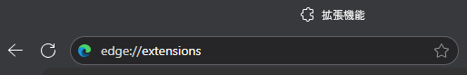
アドレスバーに edge://extensions と入力して開きます。
2 デベロッパーモードをオン
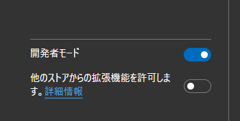
画面左側の「デベロッパー モード」をオンにします。
3 「展開して読み込む」からフォルダを選択
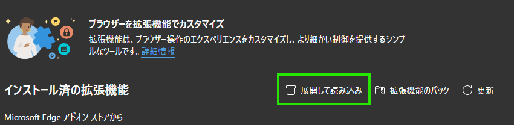
ZIPは不可。解凍済みのフォルダ（manifest.json が入っている場所）を選んでください。
4 オプション画面を開く
拡張機能の詳細画面からオプションを開いてください。
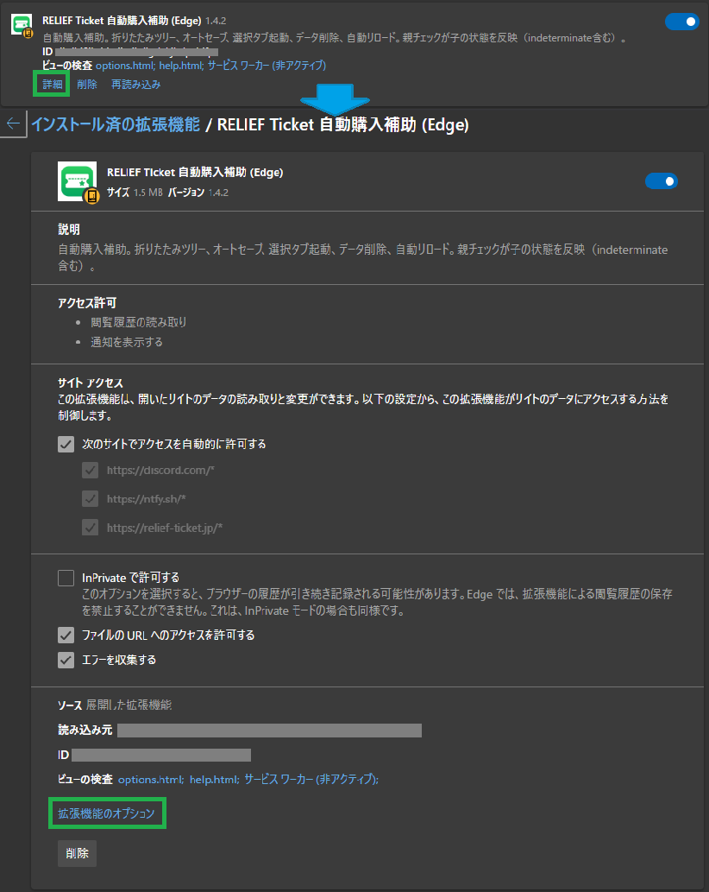
拡張の「詳細」→「拡張機能のオプション」。上の「ヘルプ」リンクから本ページに戻れます。
オプション画面は、ブラウザ画面右上のジグソーパズルのような所からも表示させることが可能です。
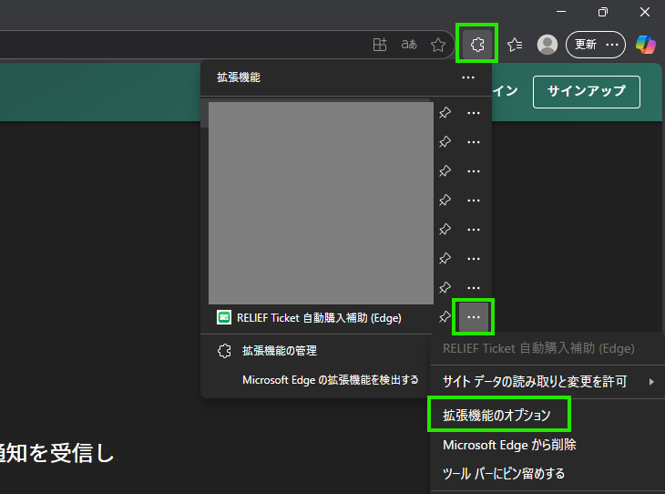
拡張の「詳細」→「拡張機能のオプション」。上の「ヘルプ」リンクから本ページに戻れます。
5 情報を最新化 → ツリー表示
情報を最新化ボタンを押すと、裏でrelief-ticketのサイトを開き、アーティスト・公演の一覧を取得します。
取得した情報をもとに、公演の一覧がツリー表示されます。
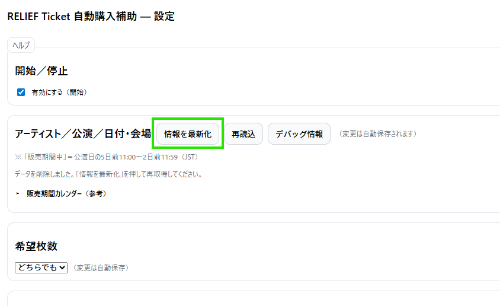
裏で relief-ticket.jp を巡回し、アーティスト→公演→日付・会場 を取得します。
6 取りたい日付・会場にチェック
一覧の中で、チケットを取りたい公演にチェックをつけます。
上位のチェックを付けることで、配下全てにチェックをつけることもできます。
リセール販売期間中の公演には、「販売期間中」のアイコンがつきます。
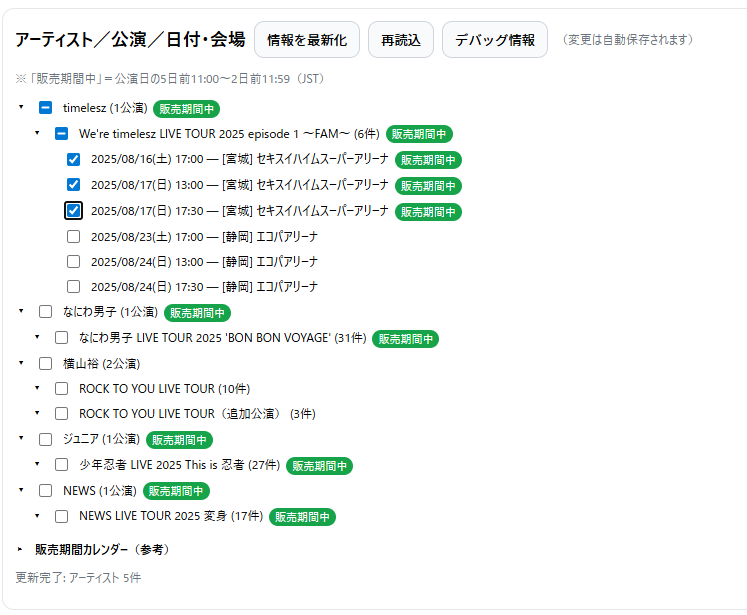
選択は変更都度で自動保存。上位にチェックで配下一括ON。
7 希望枚数、通知設定を行う
「希望枚数」の項目を選択します。（１枚のみか、２枚のみか、どちらでも、のいずれかを選択します。
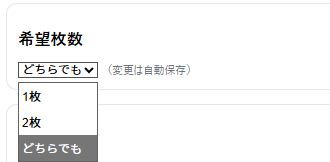
「希望枚数」の項目を選択します。（１枚のみか、２枚のみか、どちらでも、のいずれかを選択します。
9 監視：イベントページを開いて待つ
オプションページ一番上の「開始／停止」の「有効にする」をONにします。
その状態で、対象の公演ページ（例：https://relief-ticket.jp/events/artist/11/101）を開くと、自動でリロード監視、指定条件の公演・枚数を検知したらボタンクリック・通知を行います。
※ 最初のクリック以降、SMS認証より先は、ユーザーにより操作をしてください。
処理を停止したい場合は、「有効にする」をOFFにしてください。
「タブ起動（監視を始める）」から一括で対象のタブを開き即監視を開始することもできます。
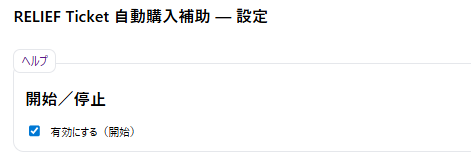
在庫が出たら、希望枚数を自動選択→通知→購入ボタンクリックまで自動で実行。
販売期間カレンダー
参考として、取得した公演の販売されている期間を、カレンダーに表示しています。
見たい日付にマウスカーソルを合わせると、その日にどの公演のリセール販売がされるかが表示されます。
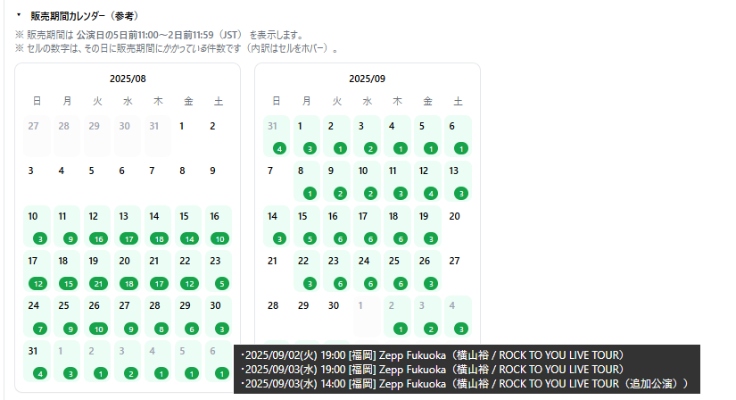
公演日の5日前11:00〜2日前11:59（JST）を着色。セル右下は該当件数、カーソルを当てると内訳も表示。
通知の設定（ntfy / Discord / デスクトップ）
ntfy おすすめ
「トピック名」という項目を任意で自分の好みに設定することで、スマホアプリやデスクトップで検知した通知を受け取ることができます。
無料で利用することができます。
＜PCブラウザで受け取る場合＞
自身で設定したトピック名のURL（例：https://ntfy.sh/relief-ticket-abcd）にアクセスします。
以下のような画面が出て、オプションページのテスト通知や、実際に検知したチケットの情報が表示されるようになります。
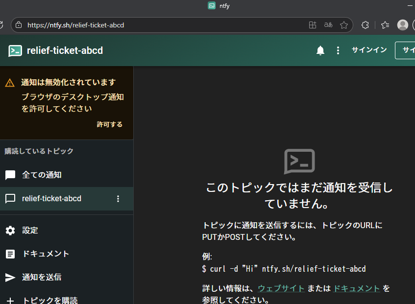
任意のトピック名を入力（例：relief-ticket-abcd）。「テスト通知を送る」で通信確認。
＜スマホアプリで受け取る場合＞
アプリストアでntfy.shをインストールします。
自身で設定したトピック名の購読、通知許可をします。（例：https://ntfy.sh/relief-ticket-abcd）
オプションページのテスト通知や、実際に検知したチケットの情報が通知されるようになります。
Discord
Webhook URL を貼り付けるだけでOK。検出内容がテキストで投稿されます。
デスクトップ通知（常に有効）
このツールが稼働しているブラウザに対して、通知が投稿されます。投稿された通知はウィンドウ右下に出てきます。
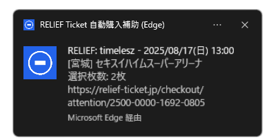
ntfy/Discord の設定に関わらずPCにも通知。クリックでチェックアウト直リンクを開きます。
選択した公演をタブで開く
チェックした日付・会場がある公演の画面を一括で開いて、一斉に監視を開始することができます。
※ オプションページ一番上の「開始／停止」の「有効にする」をONにしていないと、タブが開かれても監視が始まりませんのでご注意ください。
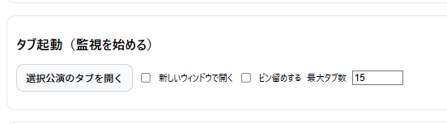
「別ウィンドウ」「ピン留め」「最大タブ数」を指定して一括オープンできます。
保存データとプライバシー
- 設定（ON/OFF・希望枚数・通知設定・リロード/スクロール）は chrome.storage.sync。
- 取得したアーティスト/公演一覧と選択済み公演は chrome.storage.local。
- 外部送信は、あなたが設定した通知先（ntfy/Discord）に対してのみ実施します。
※ 本ツールは非公式です。ご利用は自己責任でお願いします。
{kind=link}
{kind=link}
{kind=link}
{kind=link}
{kind=link}
{kind=link}
{kind=link}
{kind=link}
{kind=link}
{kind=link}
{kind=link}
{kind=link}
{kind=link}